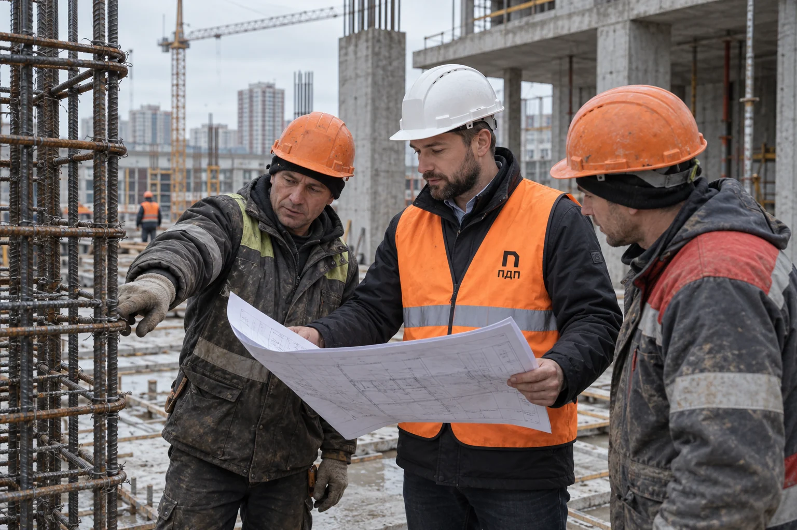
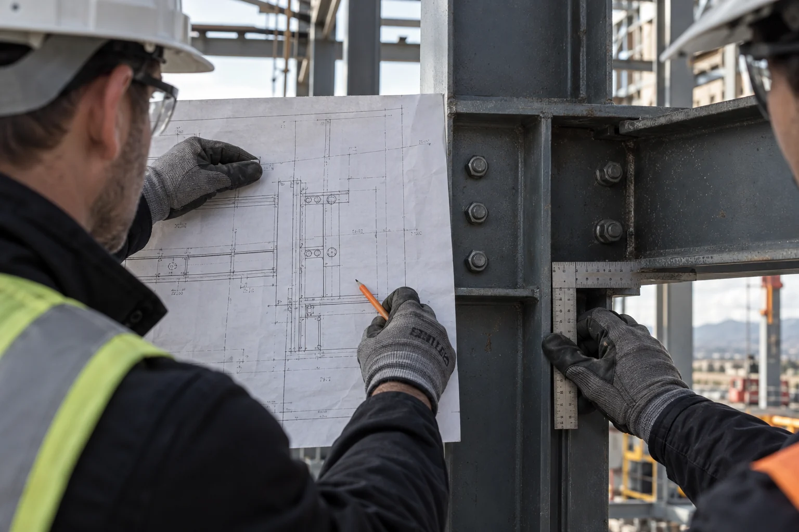

Проект под контролем
Заказчик видит текущий статус, открытые вопросы и ближайшие решения.
Берём на себя функции технического заказчика на стороне владельца проекта. Связываем проектирование, подрядчиков, контроль работ и документацию, чтобы решения не терялись между участниками, а заказчик видел реальное состояние объекта.

Пока у проекта один подрядчик и небольшой объём работ, часть вопросов заказчик может держать на себе. На сложном объекте появляются проектировщики, поставщики, несколько подрядчиков, согласования и десятки версий документов. Технический заказчик собирает эту работу в одну систему: кто принимает решение, кто выполняет, что уже согласовано и что мешает перейти к следующему этапу.

Проверяем исходные данные и проектные решения, ведём открытые вопросы, координируем подрядчиков, следим за сроками и качеством работ. На площадке сопоставляем выполненное с проектом. Если решение меняется, сразу фиксируем, какие работы и документы оно затрагивает.
Сначала разбираем актуальную документацию, график, договорённости и замечания. Отдельно смотрим, что уже выполнено на площадке и какие решения существуют только в переписке или устно. После разбора у заказчика появляется список рисков, контрольных точек и действий, которые нельзя откладывать.
Заказчик видит текущий статус, открытые вопросы и ближайшие решения.

У задач и решений есть ответственные, а договорённости не теряются между участниками.

Изменения в проекте, работах и документах синхронизированы между собой.

Проблемы выявляются до того, как они превращаются в задержку или переделку.
Он представляет интересы заказчика в проекте: собирает исходные данные, координирует участников, контролирует решения, сроки, качество и документацию. Подключение оправдано, когда проект требует постоянной координации нескольких команд.
Генеральный подрядчик выполняет строительные работы и отвечает за их организацию. Технический заказчик действует на стороне владельца проекта: проверяет решения и работу участников, чтобы итог соответствовал задаче и согласованной документации.
Да. Сначала мы разбираем текущие документы, фактическое состояние площадки и открытые вопросы, затем фиксируем порядок передачи и ближайшие контрольные точки.
Состав зависит от проекта. Обычно это реестр исходных данных, решений и согласований, протоколы вопросов, график контрольных точек и документы, подтверждающие готовность этапа.
От состава задач, стадии проекта, количества участников и требуемой глубины контроля. После изучения исходных материалов мы описываем конкретный объём работ и фиксируем его в договоре.
Мы можем организовать и координировать строительный контроль в рамках согласованной роли. Точный состав функций определяется задачей заказчика и договорённостями с участниками проекта.
Организуем работу проектировщиков и подрядчиков, следим за сроками, качеством и документами. Вы в любой момент понимаете, что происходит на объекте и что нужно для следующего этапа.